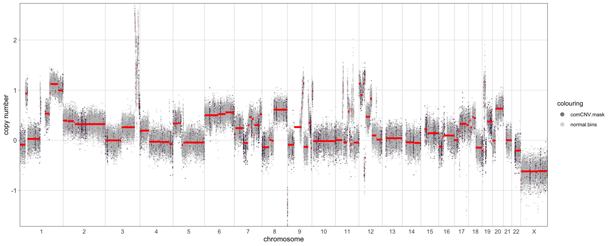
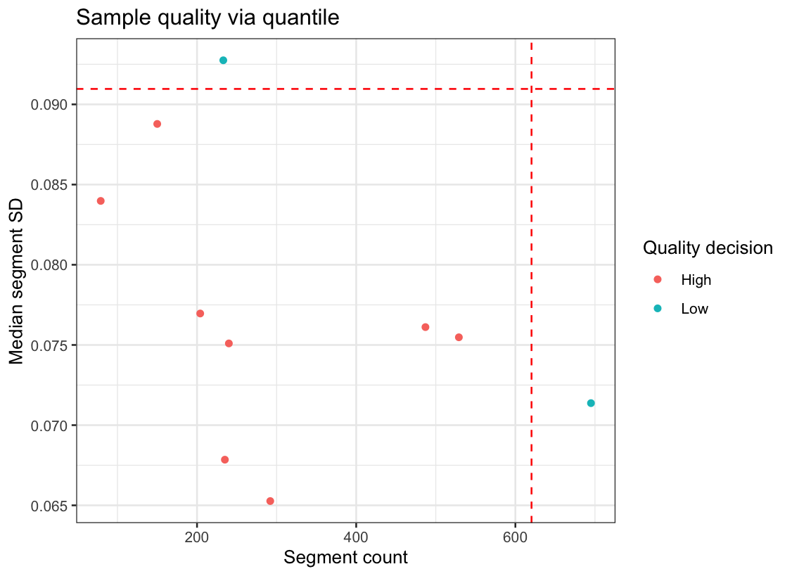
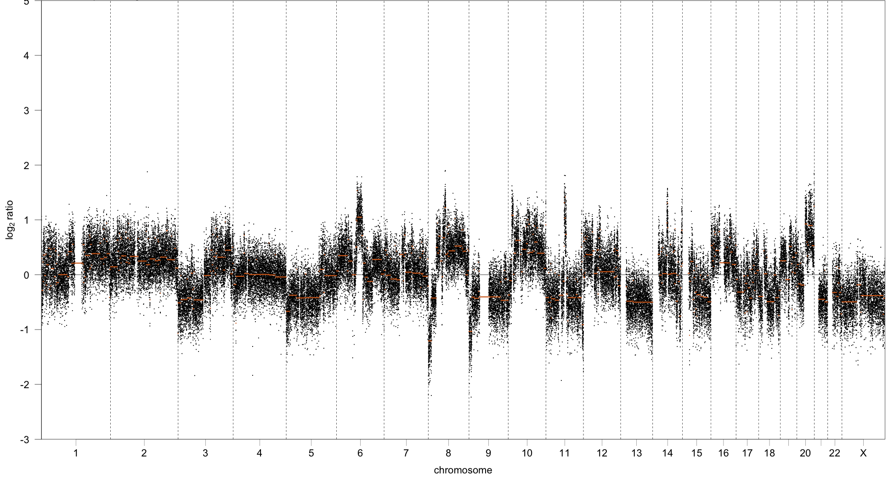

1. Sample Filtering and Quality Evaluation
1_samplequality-vignette.RmdIntroduction
The utanos package begins with relative copy-number (rCN) call
genomic data. It expects rCN data output from tools such as
QDNASeq or WiseCondorX. This data consists of
calls (a numeric value) for each ‘bin’ in the genome. A bin is an
artificially defined partitioning of the genome into pieces of
sufficient size to reasonably estimate a relative copy-number. For
shallow sequencing this is needed because there is not sufficient depth
present for base-pair level resolution.
Tabular long-format example:
chromosome start end sample CN.call
<chr> <int> <int> <chr> <dbl>
1 900001 950000 VOA14948A 1.00
1 950001 1000000 VOA14948A 1.00
1 1000001 1050000 VOA14948A 1.00
1 1050001 1100000 VOA14948A 1.00
1 1100001 1150000 VOA14948A 0.96
1 1150001 1200000 VOA14948A 0.96Relative CN-callers such as QDNAseq sometimes have
built-in QC functionality for filtering out bins. Most commonly this is
for low-mappability or blacklist regions (see the paper for
descriptions). Other CN-callers also can have whole-sample QC
evaluation options though the vast majority of these tend to be very
manual. They require the researcher to examine every individual sample.
This vignette will cover how utanos can be used to do filtering and QC
evaluation on an individual or group level.
I - Filtration
Often, in order to focus on the CN-aberrations of most interest, it is convenient to filter out more than just blacklist regions. What about centromeres? Telomeres? There are regions of the genome that are commonly copy-number aberrant in the background human population. Perhaps it would be nice to mask these too. Utanos clarifies the filtration process.
Note: Utanos comes with 2 tables of common variants (one for hg19 and the other hg38). They can be used to filter a dataset like so.
rcn.obj <- readRDS("~/Path_to_your_data/a_data_object_aligned_to_hg38.rds")
rcn.obj <- FilterCNs(cnobj = rcn.obj,
genome = "hg38",
minimum_overlap = 5000,
removebins = FALSE,
maskgaps = TRUE,
maskcomCNVs = TRUE)Database of
Genomic Variants (DGV)
The associated
paper
But let’s break down this filtration step using a real example dataset. An accompanying data package to utanos is utanosmodellingdata found here. Clone that repo to somewhere convenient such as a common ‘repos’ folder on your machine and read in the sample data. It is human endometrial carcinoma sWGS data aligned to hg19.
> library(utanos)
> library(magrittr)
> rcn.obj <- readRDS("~/repos/utanosmodellingdata/sample_copynumber_data/sample_rcn_data.rds")
> rcn.obj <- FilterCNs(cnobj = rcn.obj,
genome = "hg19",
minimum_overlap = 5000,
removebins = FALSE,
maskgaps = TRUE,
maskcomCNVs = TRUE)
> featureData(rcn.obj)@data %>% head(5)
chromosome start end bases gc mappability blacklist residual use
1:1-30000 1 1 30000 66.66667 55.48500 12.39630 3.263333 NaN FALSE
1:30001-60000 1 30001 60000 100.00000 39.75667 28.22070 0.000000 NaN FALSE
1:60001-90000 1 60001 90000 100.00000 36.13000 27.47780 0.000000 NaN FALSE
1:90001-120000 1 90001 120000 100.00000 39.61667 9.05091 0.000000 NaN FALSE
1:120001-150000 1 120001 150000 100.00000 46.52333 7.33796 0.000000 NaN FALSE
centro.telo.mask comCNV.mask
1:1-30000 FALSE FALSE
1:30001-60000 TRUE FALSE
1:60001-90000 TRUE FALSE
1:90001-120000 TRUE FALSE
1:120001-150000 TRUE FALSEThis sample data had relative copy-numbers called by QDNAseq. The
‘use’ column in the S4 object indicates bins QDNAseq determines to be
useable. The bins with ‘FALSE’ are not. For more details on QDNAseq and
its methods see the bioconductor vignette here.
The FilterCNs utanos function adds another two columns to
the featureData table because the maskgaps and
maskcomCNVs parameters were set to TRUE. The
use, centro.telo.mask, and
comCNV.mask columns we will refer to as ‘masks’, as if you
subset by these columns you essentially mask them from downstream
analysis.
A final note on the FilterCNs function: using the
filter_by parameter a user can provide their own regions by
which to create a mask or filter the QDNAseq copy-number object. Just
pass a dataframe with the locations, one location per row, to the
filter_by parameter. Using the maskname
parameter the user can set the name for the mask. The
maskname parameter expects a character string.
Next, we can visualize the masks using the
CNSegmentsPlot function.
> a <- CNSegmentsPlot(rcn.obj,
sample = "CC-CHM-1341",
highlight_masks = c('comCNV.mask'),
point_size = 0.5,
dolog2 = TRUE,
def_point_colour = 'grey')
> a
Clearly visible in the plot is that several of the regions that are
commonly copy-number variant in humans coincide with a
copy-number/segmentation change. Depending on the user’s specific use
case these regions may or may not be worth excluding.
Note: The dolog2 parameter was set to TRUE in this call so
we see the copy-number calls and segments log2 transformed and so
centered about 0. See the documentation for that function for more
details.
II - Sample Quality Evaluation
Shallowly sequenced whole genome data involves copy-number calling in
two stages: relative copy-calling (via tools such as
QDNASeq and WiseCondorX) and then absolute
copy number calling which is run on the relative calls (via tools like
rascal). Naturally, the accuracy of the inferences that can
be made in downstream analysis depend heavily on the accuracy of the
copy number calls inferred. However, for large projects it is an
intensive demand to manually evaluate the quality of hundreds to
thousands of samples. This is another the niche that Utanos fills.
Use the GetSampleQualityDecision function to get quality
calls for each sample in your dataset. The QualityPlot
function can then be used to visualize the samples that fall outside the
thresholds.
> qc_decisions <- GetSampleQualityDecision(rcn.obj)
> qc_plot <- QualityPlot(qc_decisions)
> qc_decisions %>% head(5)
sample seg_counts median_sd decision seg_cut med_cut
1 CC-CHM-1341 204 0.07696209 High 620.3 0.09096386
2 CC-CHM-1347 695 0.07137276 Low 620.3 0.09096386
3 CC-CHM-1353 235 0.06784682 High 620.3 0.09096386
4 CC-CHM-1355 240 0.07509611 High 620.3 0.09096386
5 CC-CHM-1361 529 0.07547814 High 620.3 0.09096386
The default behaviour of this function is make a sample-wise decision based on thresholds for the median segment standard deviation and the total segment count.
II.1 - About the metrics: Median segment variance and segment count
The segment variance is calculated as the sample variance per segment, i.e the variance between the ratios of each bin in each segment. The observed median segment variance then is a sample-wise measure for noise, which is defined as the median of a set of variances.
The segment count is simply the number of distinct segments found in the sample. In poor quality samples over-segementation is a frequent indicator.
The strategy with this quality evaluation technique is to consider both of these metrics in tandem. To work through the intuition, consider the following two copy-number profiles:
Sample 2: Poorer quality copy number profile

The key aspects that differ between the two profiles are: the number of segments, the length of segments, and the variance within each segment of the ratios, i.e we see the copy number ratios more tightly clustered around the orange line for sample 1 compared to sample 2.
III - Possible future additions and ideas: The copy-number profile abnormality score penalty
This is a metric to distinguish abnormal from healthy copy number profiles. The score quantifies the deviation of segments from the normal diploid state at the sample-level. The copy-number profile abnormality score can be expressed as follows:
Here,
represents the
-score
of the segment
.
represents the length of the segment and
represents the number of segments.
The average segment length can be represented as follows:
This term functions as a penalty term for sample quality, as short segments are generally observed in bad quality or truly highly aberrant samples. Thus, calculating this penalty in addition to other metrics could be very informative. A very important note is that alone this metric would be problematic. Copy-number aberrant is an expected state when the biology of the sample truly is chromosomal aberrations. This metric in tandem with others would seek to find aberration where none should be present.
Thus, a future workflow could be a classifier (which would be trained on our test set) with the features being the segment sizes, median segment variances, the Lilliefor normality statistic, read length, coverage etc.